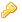

Template:Password Reset
From Help wiki
Contents |
[edit]
Is the temporary password feature in use?
A password reset works in different ways depending on whether the temporary password feature is in use. You can tell by doing the following
- Click on Reset
- If you can't see
- the 
- the "Temporary Password" check box
- the Send Password button
Then temporary password is not in use. Go and set it up …it's handy and it's our recommended approach.
[edit]
Reset a password
- Go to Users / Password
- Click Reset
- Enter and re-enter a new password which is allow 64 characters or less.
- Click Save
- Let the user know what the new password is
[edit]
What does the user do next?
- On Login, the user is navigated to the Home screen. they are not required to change their password.
- They can go to Users / Password to change their password at any time.
[edit]
Reset a temporary password
- Go to Users / Password
- Click Reset
- Generate a random password, click on the .
- You can enter and re-enter a new password directly (this might be better than using a random password if you're on the phone to the user and want to relay a password that's easy to remember).
- Passord field must allow 64 characters or less
- Click Save
- Click Send Password if you want to email the user to advise them of the password.
[edit]
While a temporary password exists
- Until the user has updated their password, the temporary password is visible to you on the Users / Details tab
- You can re-send the advice email from either the Users / Details tab or the Users / Password tab at any time.
[edit]
What does the user do next with a temporary password?
- On Login, the user is navigated to the Users / Password tab and must change their password before they can continue to use the system.
- Once the user has updated their password, Users / Details is updated so that:
- the "Password" field is hidden
- the "Temporary Password" field is un-checked
- the Send Password button is hidden

{kind=link}